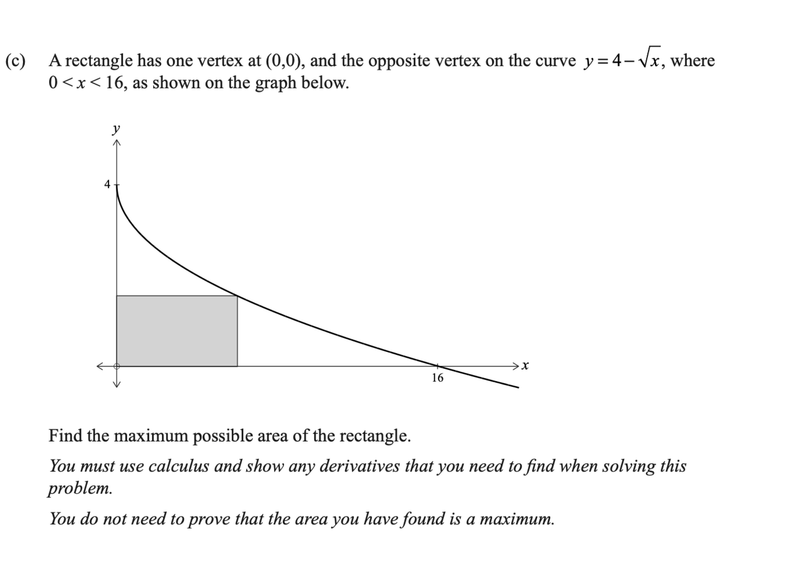

Level 3 Differentiation Walkthrough
2019 Differentiation · Q3(c)
2019 Paper
Question
A rectangle has one vertex at \((0,0)\) and the opposite vertex on the curve \(y=4-\sqrt x\), where \(0\lt x\lt16\). Its sides lie along the axes, as in the diagram. Find the maximum possible area of the rectangle.
You do not need to prove that the area you have found is a maximum.
You must use calculus and show any derivatives that you need to find when solving this problem.
Original question scan

First walkthrough idea
Focus to try first
Optimise the area of a rectangle under \(y=4-\sqrt{x}\).
Step 1
Write the area function
The rectangle has width \(x\) and height \(y\).
Show the first step’s working
Walkthrough overview
What this question practises
This 2019 walkthrough is part of AS91578 — Apply differentiation methods in solving problems.
Method: Maximising a rectangle area under \(y=4-\sqrt{x}\).
This is Question 3(c) from the 2019 NCEA Level 3 Differentiation paper for AS91578 — Apply differentiation methods in solving problems. Use the guided hints to practise the method before revealing the full working.
Calc.nz is an independent learning resource. Compare questions, diagrams, and assessment information with the official NZQA resources for AS91578.
Page updated .
Learning summary
Review the method, not only the answer
This walkthrough helps you practise maximising a rectangle area under \(y=4-\sqrt{x}\). Use the hints to plan the method, then repeat the question without hints and check each step.
Check
Check the feasible domain. Justify a maximum using derivative signs, concavity or endpoints unless the question explicitly says a proof is unnecessary.
Calculus essentials: algebra, logarithms, rules, radians and domains
Continue practising
Try a related question: 2024 Differentiation · Q1(d). Attempt it before opening working, then return to this question later.
- All 2019 Differentiation walkthroughs
- All AS91578 Differentiation years
- Practise more questions using this skill: Stationary points and optimisation